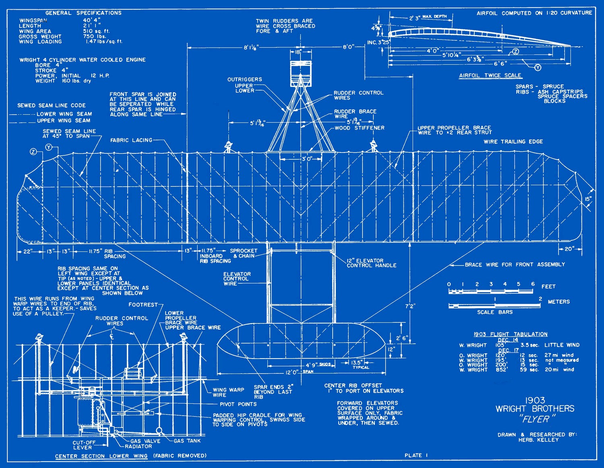

Week 5 - Systems Engineering
To me, Systems engineering is bringing together different engineering disciplines to form a cohesive end product. Systems engineer is a job title where as I think systems thinking is a mentality. Systems engineering requires systems thinking however, I believe systems thinking can be applied to a variety of contexts.
The lecture more formally defines systems engineering as the following:
The set of activities which control the overall design, implementation and integration of a complex set of interacting components or systems in order to meet the whole-life needs of all users and other stakeholders within the constraints arising from the system's operational and development environment.
I work part time as a software developer in the public service. Using this course I can view the system I have been working on in a more systems engineering way. Despite, the system being almost entirely software based, this contrasts with the examples given by CEA, the concepts still apply. The system can be broken down into components e.g. server side, client side, sdk, web, etc. Looking at the interaction of these elements and systems thinking in general can help me better understand the separate components on an analytical level.
I understand software engineering as the process of designing, developing, testing and verifying software. Systems engineering may involve software and it may even involve the development of software but the engineering of the system itself includes more than just software. Systems engineering between a management position and a position of a ground level engineer. Software engineering is fundamentally a social discipline however, systems engineering is more the coordination of specialised engineers to form together the end product.
WEEK 6